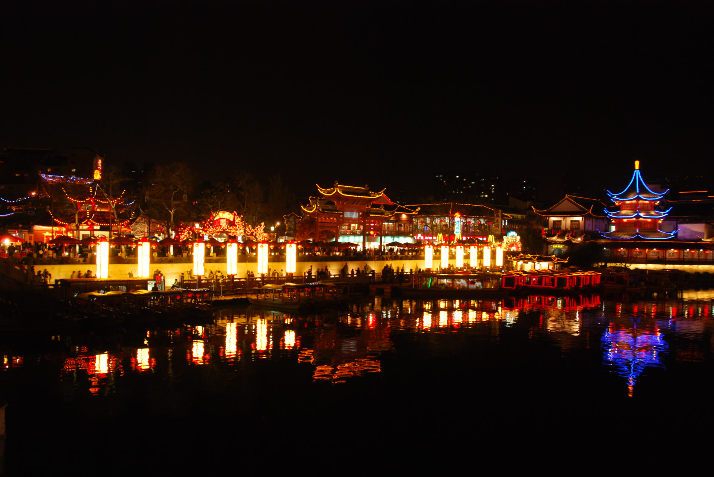
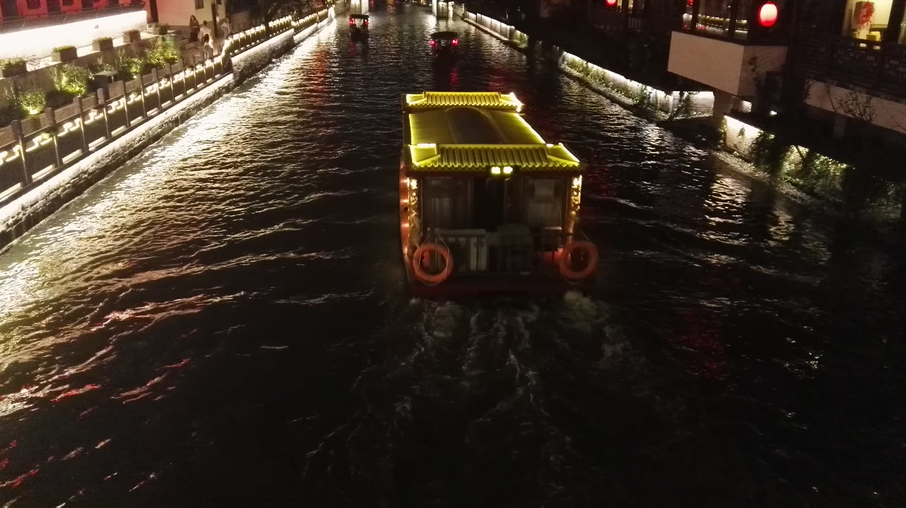

秦淮夜游
桨声灯影里，金陵最动人的夜色缓缓展开。
两岸飞檐映水，画舫穿行灯海。从夫子庙码头登船，夜风带着桂香与市井烟火，河面把整座古城轻轻托起。

一条水道，三处停泊，把金陵的故事连成一夜。
红墙金匾，万灯齐明。登船前先走一遭庙前灯市，热气与光影替夜航暖场。
朱雀桥边野草花。船过王谢故地，灯影碎在涟漪上，旧事只余一痕水纹。
古城墙沉在河岸深处，船头一转，城垛与灯火叠成金陵最沉静的句号。
建议傍晚抵达夫子庙，先看灯市，再择晚班画舫。河风微凉，带一件薄外套即可。